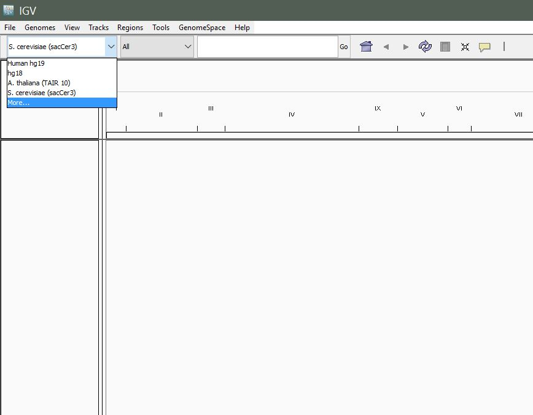
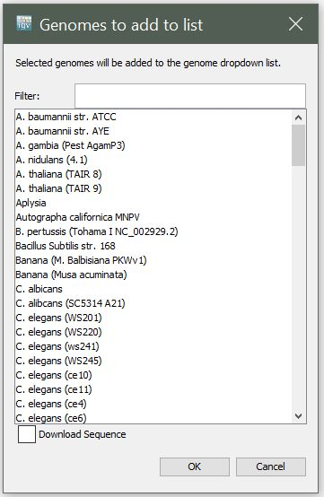
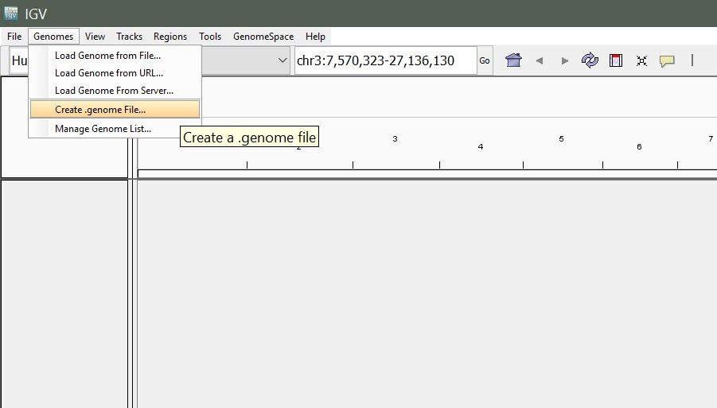
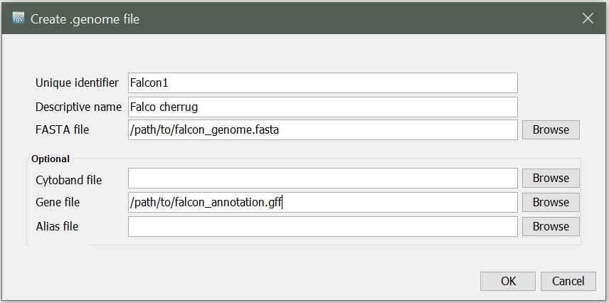
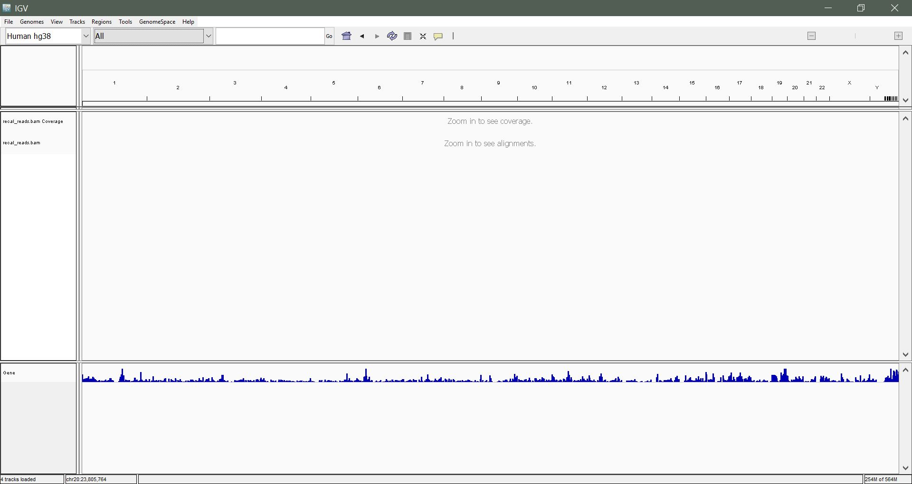

IGV
The Integrative Genomics Viewer (IGV) is a high-performance visualization tool for interactive exploration of large, integrated genomic datasets. It supports a wide variety of data types involved in NGS analysis, including mapped reads, gene annotations, and genetic variants.
This page is a hands-on walkthrough: launch IGV, load a reference (pre-packaged or custom), load aligned reads, then navigate the data.
Overview
Launching IGV
Load a pre-existing genome
Create a custom genome
Load alignment data (mapped reads)
Navigate and interpret the data
Launching IGV
There are a few ways to launch IGV. We’ll cover two basic ways here.
Note
You may need to update your Java in order to run IGV.
Using Java Web Start
Go to the IGV downloads page: http://software.broadinstitute.org/software/igv/download
Click the launch icon. The browser will display the web-start launch window.
Select Open with Java Web Start and click OK. If the system displays messages about trusting the application, confirm that you trust the application. Web Start downloads and starts IGV.
Download and run locally
Download IGV and launch it locally on your Windows or Mac computer. Your computer must meet certain requirements (OS, Java version, etc.). Follow instructions on http://software.broadinstitute.org/software/igv/download. When prompted, register or log in as requested. You must register to download IGV (you’ll need to provide your email address, that’s it).
Launch via Open OnDemand (NYU HPC)
NYU HPC users can run IGV through Open OnDemand (OOD). This has two advantages over running IGV on your laptop: the HPC has more memory for working with large datasets, and your data on the HPC is available directly without having to download it first.
Log in to Open OnDemand.
In the top menu, click Interactive Apps.
Select IGV.
Set the resource request. The defaults (2 cores, 8 GB memory) work well for most cases. If you are working with large files (e.g. whole-genome BAMs), increase the memory to 16 GB or higher. Set a reasonable time limit for your session (e.g. 4 hours).
Click Launch.
Once the session is ready, click Launch IGV to open the viewer in your browser.
Load a pre-existing genome
Data for many commonly studied organisms comes pre-packaged with IGV.
Once IGV is up and running, navigate to the left-most dropdown in the toolbar to select your genome.
{kind=link}

The left-most dropdown in the IGV toolbar lists pre-packaged genomes.
Select More… to see the full list of available genomes.
{kind=link}

The More… dialog shows the full set of genomes you can pull down on demand.
Create a custom genome
In case you are working with an organism for which there is no pre-existing genome in IGV, you can create a custom genome quite easily.
Requirements:
Reference sequence (in FASTA format)
Gene annotations (in
.gffformat)
From the menu, select Genomes > Create .genome File.
{kind=link}

Genomes > Create .genome File in the IGV menu bar.
You will be presented with the following window. Enter a unique identifier and descriptive name (these can be anything that makes sense to you), then select the path to the reference FASTA file and the path to your gene annotation (GFF) file for the Gene File.
Note
A FASTA index (.fai) file needs to be in the same directory as
the reference sequence (.fasta).
{kind=link}

The Create .genome File dialog: identifier, descriptive name, reference FASTA, and gene-annotation GFF.
Upon clicking OK, you will be prompted to select a name and
location to save your new .genome file.
Load alignment data
Once you’ve loaded your reference genome, you can load your mapped reads. Note that your reads must be sorted and indexed prior to loading.
From the menu, select File > Load from File.
Locate the aligned_reads.sorted.bam file and
click Open. You should see something like the following:
{kind=link}

IGV after loading a sorted, indexed BAM. The coverage track sits above the per-read pileup.
{kind=link}
{kind=link}
Exercise
Color-coded reads: you might see red and blue reads. What do these represent? What might this suggest?
Further reading
For more details, see the IGV User Guide.